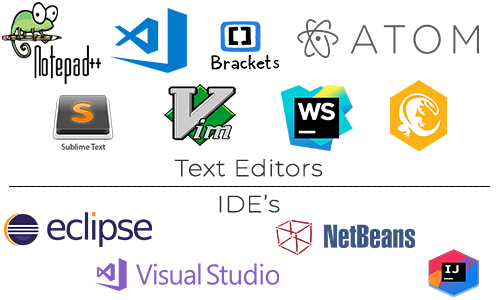
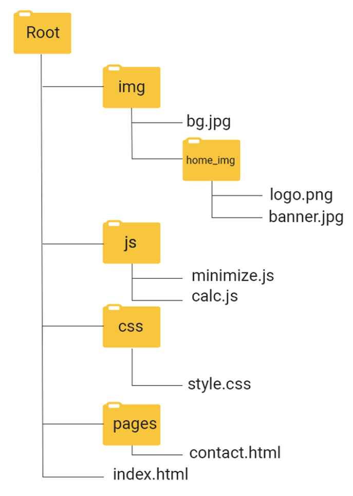

Intro. to Web Tooling

Instructor: Chris Fulton
Learning Objectives
- Development Tools and Environments
- Discuss and Compare Text Editors and IDE's (Integrated Development Environments)
- Explain the benefits of Local vs. Cloud Dev. Environments
- Understanding File Structure
- Discuss File Structure best practices
- Compare Relative and Absolute file paths
Development Tools
Text Editors ✦ Integrated Dev. Environments
- Text Editor - a software program that allows users to input and edit text. Allows you to create and edit a range of programming language files
- Integrated Development Environment (IDE) - a software suite that consolidates the basic tools developers need to write and test software. Typically, an IDE contains a code editor, a compiler or interpreter and a debugger that the developer accesses through a single graphical user interface (GUI).

Development Tools
Local Development ✦ Cloud Development
- Local Development - hosting your site’s files locally (on your computer) rather than externally (like on a hosting company’s servers).
- Cloud Development - a web-based integrated development platform where your files are hosted externally. Web-based development examples include Cloud9(now apart of Amazon), codeenvy, shiftedit, Orion, codeeverywhere.
Setting a Directory Structure
- You build a site in a local/cloud environment but typically host it on a different computer
- The files for your web site must be transferred from the development environment to the hosting computer
- Your file structure must be transferable
- Use relative paths to indicate file locations
Single Folder Structure
- files are placed in the root folder. Images, JS files, css files all exist in root folder.

Hierarchical Folder Structure
- additional folders are created within the root folder to categorize the different type of files. Images, JS files, css files will exist within their respective folder.

File Structure Best Practice
- Basic structure we'll use is similar to picture on the left.
- Different file structures will look different based on technology stack and type of project.
- The idea is to have order and structure to your files

Folder Paths
Absolute Paths ✦ Relative Paths
- Absolute Paths - a path that starts from the root folder and processes down the entire folder structure
- Relative Paths - a path is expressed relative to the location of the current document.
- File Path Location:
/ - means the root of the current drive
./ - means the current directory
../ - means the parent of the current directory

In-Class Activity
<!DOCTYPE html>
<html>
<head>
<title>Basic Structure </title>
</head>
<body>
<img src="" alt="" />
</body>
</html>
- Create a new web project and replicate the file structure from the previous slide.
- Within the index.html file, copy the code from above and save the file
- Download a popular logo image from the internet and add the image into the images folder
- Locate the <img> tag and provide the relative path to properly resource the image into index.html
- Save the file and render in browser
Quiz Question 1
Given the image above, what is the relative file path to logo.png from contact.html file?
Video Lectures
References
- https://searchsoftwarequality.techtarget.com/definition/integrated-development-environment
- http://duspviz.mit.edu/tutorials/localhost-servers/
- https://readwrite.com/2013/04/16/why-cloud-development-environments-are-better-than-desktop-development/
- https://automatetheboringstuff.com/chapter8/